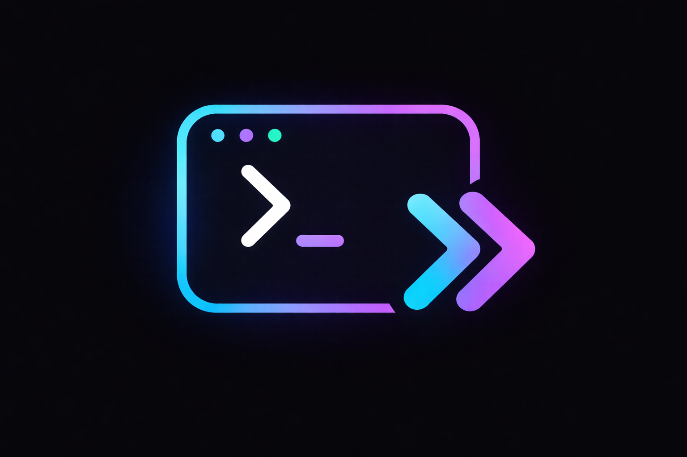

NextConsole DemoTap the floating NC button to open the debug panel. Try the demos below.
<script src="nextconsole.umd.js"></script>
<script>
var nc = new NextConsole();
// AI streaming:
nc.appendStream('s1', 'Hello ');
nc.appendStream('s1', 'World!');
nc.endStream('s1');
</script>